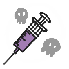
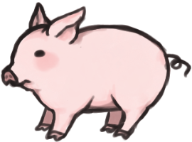

"มั่นใจแล้วหรือ ว่าอาหารที่กินเข้าไป
ปลอดภัย??"
ใช่แล้วอาหารที่พวกเรากิน อาจจะมีสิ่งที่เรียกว่า
“ยาปฏิชีวนะ” ตกค้างอยู่
ถ้าเรากินเข้าไปแล้วสะสมมากๆอาจก่อให้เกิด
“เชื้อดื้อยา” ได้!!

เชื้อดื้อยา คือ ภาวะที่เชื้อแบคทีเรียต่อต้านยาปฏิชีวนะ ทำให้การรักษา
ผู้ป่วยติดเชื้อไม่ได้ผลดีดังเดิม อาจต้องใช้เวลารักษานานขึ้นเสียค่าใช้จ่ายใน
การรักษามากขึ้น และผู้ป่วยอาจมีโอกาสเสียชีวิตมากขึ้นด้วยเช่นกัน
ทำไมต้องใช้ยาปฏิชีวนะด้วยหละ
เพราะความต้องการที่มากขึ้นของผู้บริโภคจึง
จำเป็นต้องใช้ยาปฏิชีวนะเพื่อเร่งโตให้กับสัตว์
เพื่อให้ได้ผลผลิตที่เร็วขึ้น
กระบวนการเกิดเชื้อดื้อยาจากสัตว์สู่คน

ผลกระทบ
การใช้ยาปฏิชีวนะอย่างไม่มีการควบคุมอย่างเคร่งครัดจะทำให้เชื้อแบคทีเรียหรือจุลินทรีย์อื่น ๆ สามารถเปลี่ยนแปลงโครงสร้างจนการใช้ยาตัวเดิมไม่ได้ผลในการรักษาครั้งต่อไป ทำให้อาการหายขาดยากหรือต้องเพิ่มปริมาณยาที่ใช้ในการรักษามากขึ้น โดยภาวะดังกล่าวเรียกว่าเชื้อดื้อยา

หากคุณอยากเป็นส่วนร่วมเพื่อยับยั้ง
“ผลกระทบ”
ของเชื้อดื้อยา
พวกเราขอ รณรงค์ให้มีส่วนร่วมผลักดันกับ
Greenpeace
ร่วมผลักดัน